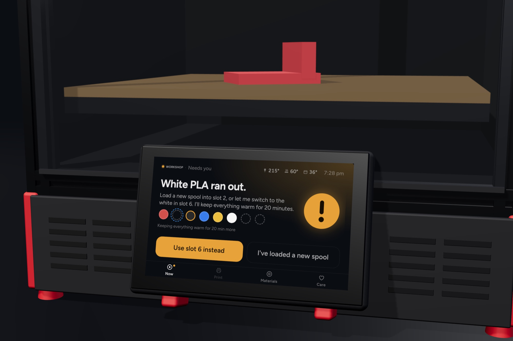
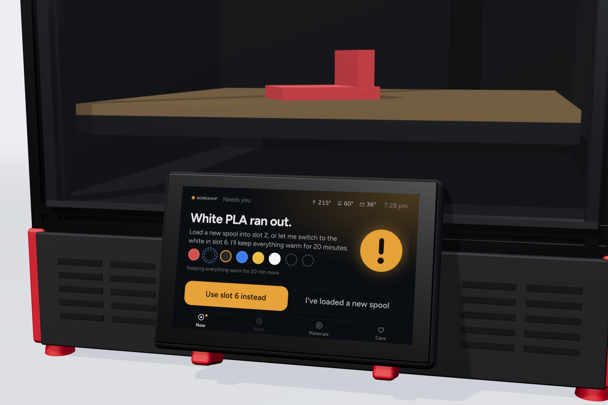
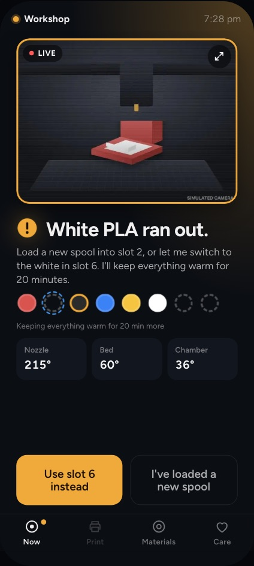
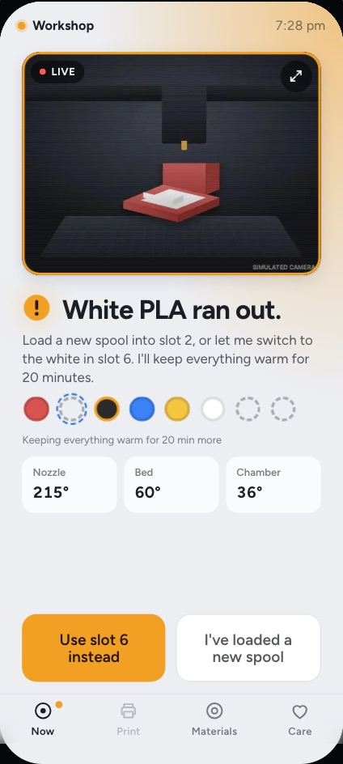
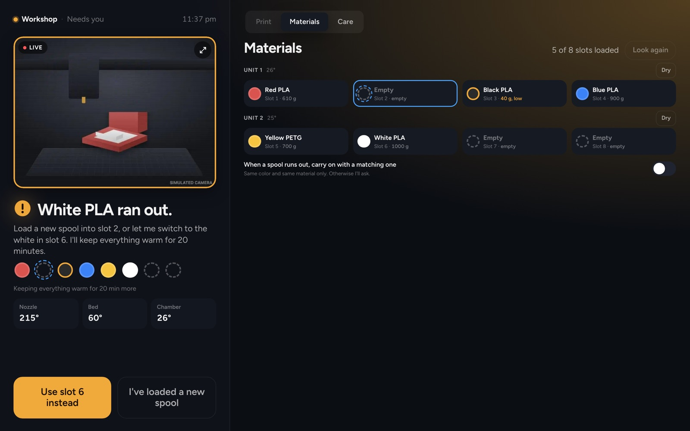
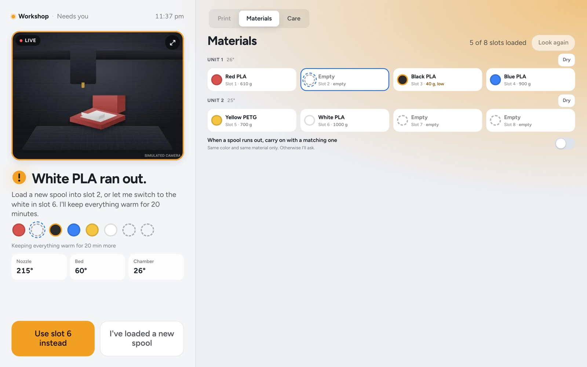
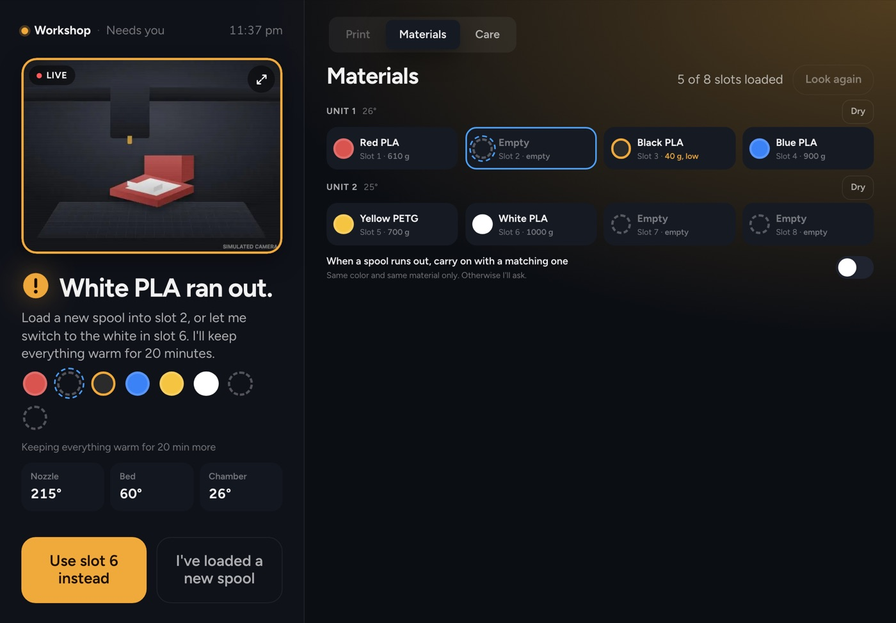
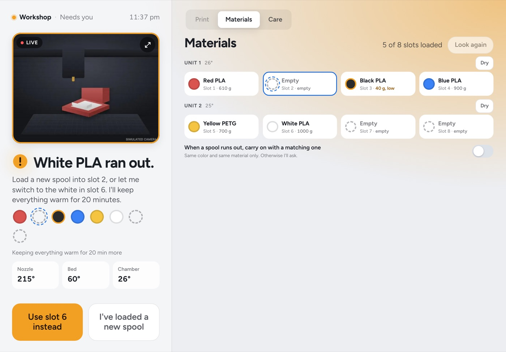

For Klipper printers
A touchscreen and phone app for the person printing, not the person tuning. It warms up, swaps spools and asks when it needs you. Mainsail stays one tap away.
Installing takes a computer with SSH. The install page shows how.
Free on your printer, no account. Open source (AGPL-3.0), signed releases, and one command takes it off again. Want to help? Be one of the first testers.




The same printer on a tablet by the sofa or the computer at your desk. Open its address in any browser on your Wi-Fi: nothing to install.
The moment that needs you on the left, the spools and the next print beside it.
Answer it on the tablet and the touchscreen and your phone follow.




Elyir Bench drives the Anycubic ACE Pro with its own driver, free and open source like the rest of it. Nothing extra to install, and a unit already set up another way stays as it is until you say so.
Tap a slot and it feeds to the nozzle. The spool's color and material stay with the slot, and a unit with a dryer dries from there too.
A color change swaps spools on its own, and the print carries on where it stopped.
How it worksERCF, Tradrack, Box Turtle, Night Owl and others, through their own software, with a check and measure from the screen. Not on a real unit yet: help us test it.
Test with your unitThe real screens, connected to a pretend printer running in your browser. Pick a moment and watch both react.
About 16 MB, a few seconds. Everything works except the actual plastic.
One command over SSH. It checks the printer first and asks once before it changes anything. Mainsail and your printer.cfg stay as they are.
The command, and will it work on mineFlash a card, join its Wi-Fi from your phone, and bring your old printer's settings over.
A Bench Box speaks for Anycubic Kobras and other printers on your Wi-Fi.
We're inviting the first testers: Klipper printers on a Raspberry Pi, Vorons, printers with a filament unit. A few weeks of your everyday prints, and Bench Cloud free while you test.
Who we're looking for, what it asks, and the steps once you're invited.
Everything the printer does, on its touchscreen and on any phone or computer on your Wi-Fi.
Your printers from anywhere, through Elyir's relay, with one Elyir account.